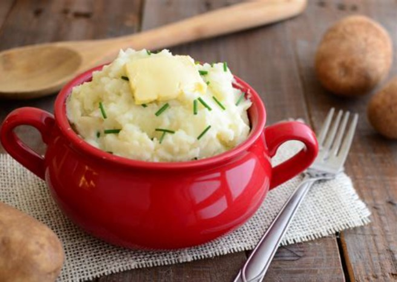

Mashed Potatoes

A simple yet elegant recipe for a quick meal.
Ingredients
- 1kg potatoes. Waxy ones work better, but any kind will do.
- 1 stick grass fed butter
- 1 clove garlic
- 1/2 cup of milk
- Salt and pepper to taste.
Steps
- Peel and wash the potatoes, before putting them in a pot of boiling water for 7 minutes or fork tender.
- Once done, remove the spuds to a strainer, with a bowl underneath to catch the runoff, and place a cloth over the strainer to let the potatoes steam for a few minutes more.
- Mince the garlic as finely as possible.
- Move the potatoes now to a large bowl for mashing. Using a masher, or fork, crush them gently. You may work it as smooth or rough as you like.
- Add half the butter and milk, stirring until incorporated. Add the rest and stir once more.
- Season with salt and pepper, and garnish with chives if you like.